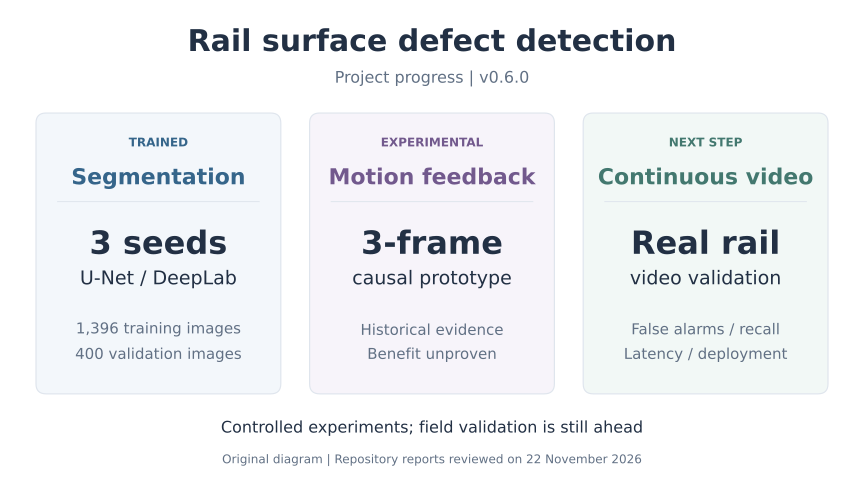

CURRENT RESEARCH
Lightweight Rail Surface Defect Detection with Motion Compensation
School of Transportation and Electrical Engineering
Dalian University of Science and Technology
Experimental prototype

Research direction
This project studies lightweight rail-surface defect segmentation, motion compensation and reliable reuse of historical defect evidence. Progress is summarized from the project repository's v0.6.0 reports, which document segmentation baselines, controlled-sequence experiments and a causal three-frame motion-feedback prototype.

Completed baselines
The recorded comparison uses 1,396 training images and the same 400 validation images across three seeds. The compact U-Net achieves foreground pixel IoU of 0.4524 ± 0.0364; the MobileNetV2–DeepLabv3+ implementation achieves 0.4408 ± 0.0200. These are validation means and sample standard deviations from repeated runs. The models show a precision–recall trade-off; the values are not independent test-set results.
Motion feedback
The prototype uses persistent defect responses from the previous two raw probability maps to select image-verification regions. Image correspondence then reranks motion candidates, aligns raw probabilities and supports conservative or stronger fusion within a causal three-frame window. Current experiments examine when history can correct missed detections while controlling false-positive propagation.
Findings and next steps
On 12 controlled sequences derived from rail images, v3 feedback did not change motion selection or improve detection. The latest conditional-correction ablation recovered some misses while adding false positives and failed its preset development criterion. Next steps address motion-candidate coverage, matched false-alarm evaluation and real continuous rail video. Independent testing, full-system latency and edge deployment remain to be evaluated.